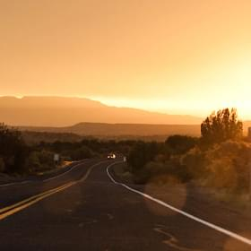
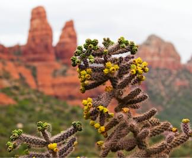
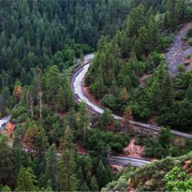
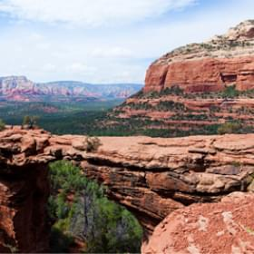

Фотографии и видео Sedona
Фото и видео
Не можете решиться на путешествие из-за курса? Фотографии помогут вам забыть о политике и экономике.
 Неродные просторы
1350 лайков
 Местная растительность
143 лайков
 Дорога на север
96 лайков
 Мост дьявола
254 лайков
Все еще сомневаетесь?
Смотрите видеопрезентацию и скорее за билетами, пока они не подорожали в очередной раз!